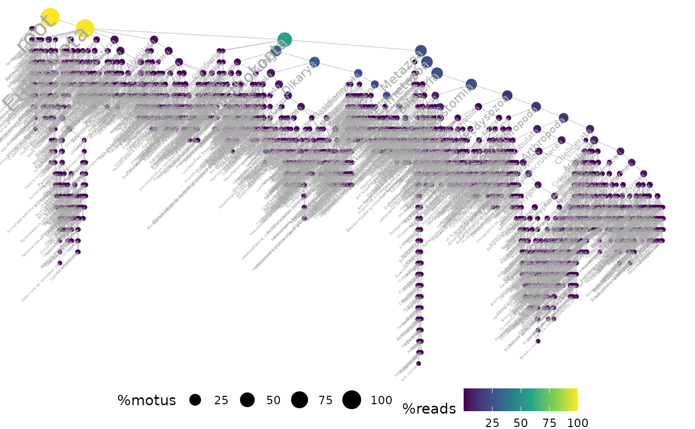
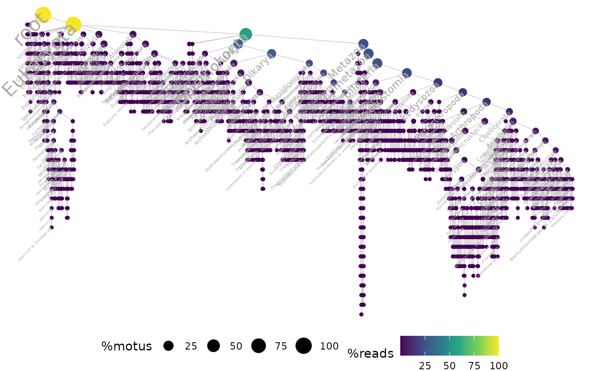
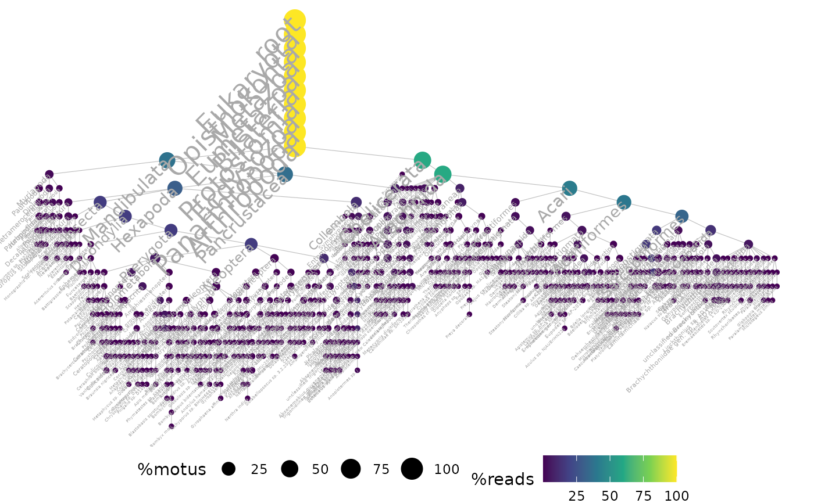
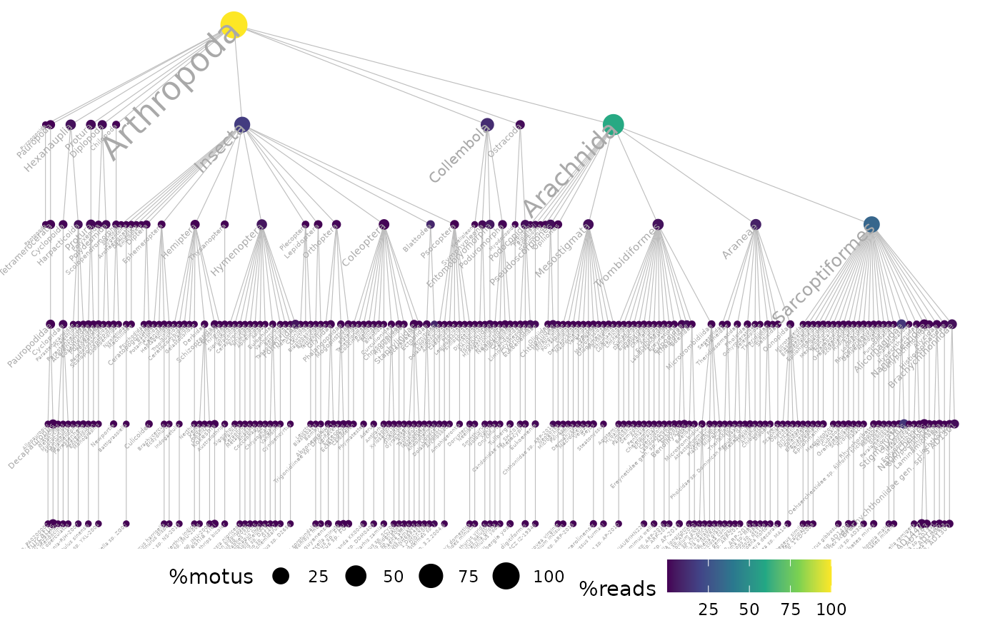

Plots the taxonomic tree from a metabarlist object and maps an attribute onto it
ggtaxplot(metabarlist, taxo, sep.level, sep.info, thresh = NULL)
| metabarlist | a |
|---|---|
| taxo | a character string or vector of strings indicating the name of
the column (or group of columns) containing the full taxonomic
information in the `motus` table from the |
| sep.level | an optional character string to separate the terms.
Required only if `taxo` is a string. |
| sep.info | an optional character string to separate the terms.
Required only if `taxo` is a string. |
| thresh | a numeric indicating the relative abundance below which taxon labels won't be plotted |
a ggplot
This function allows users to visualise the full taxonomic tree for a set of samples and to map attributes onto the produced tree (e.g. number of reads per node/branches, nb of MOTUs, etc.). The taxonomic information should follow a standard structure across samples (e.g. standard taxonomy as in Genbank, SILVA or BOLD or with defined taxonomic levels if `taxo` is a vector) by decreasing level of taxonomic resolution: the function does not infer missing taxonomic ranks. The taxonomic information should contain a level that is common to all MOTU taxonomic assignments (common ancestor).
Lucie Zinger
data(soil_euk) # Using a taxonomic path # \donttest{ ## on all data. can take a while ggtaxplot(soil_euk, "path", sep.level = ":", sep.info = "@")## show only taxonomic labels if taxon has a relative abundance > 1e-3 ggtaxplot(soil_euk, "path", sep.level = ":", sep.info = "@", thresh = 1e-3)# } ## run on a particular clade e.g. here arthropoda, otherwise difficult to read arthropoda <- subset_metabarlist(soil_euk, table = "motus", indices = grepl("Arthropoda", soil_euk$motus$path) )#> Warning: Some PCRs in out have a number of reads of zero in table `reads`!### plot ggtaxplot(arthropoda, "path", sep.level = ":", sep.info = "@")# Using a taxonomic table taxo.col <- c( "phylum_name", "class_name", "order_name", "family_name", "genus_name", "species_name" ) ggtaxplot(arthropoda, taxo.col)## to do the same on the full soil_euk data, # add a column "kingdom_name" with value "Eukaryota" in soil_euk$motus